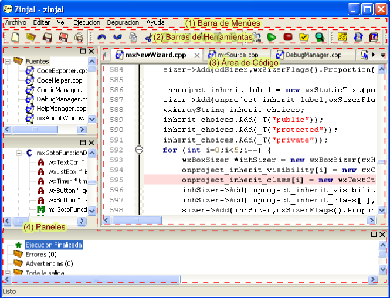

Ventana Principal

La ventana principal de ZinjaI presenta incialemente tres components básicos:
- Barra de menúes (1): Presenta acceso a casi todas las funcionalidades de ZinjaI. Ver Menúes.
- Barras de herramientas (2): Las barras de herramientas se encuentran inicialmente en la parte superior de la ventana (aunque el usuario puede desplazarlas u ocultarlas) y presentan accesos rápidos a un conjunto reducido de los comandos de menú más frecuentemente utilizados. Para mostras u ocultar una barra de herramientas utilice los correspondientes items del menú Ver.
- Área de código (3): El área de código es la parte central de la ventana y en ella se muestran y editan los archivos. Puede abrir múltiples archivos a la vez e ir alternando entre ellos mediante las pestañas ubicadas en la parte superior de la misma. Ver Área de Código.
Además de los tres elementos mencionados, para acceder a las distintas funcionalidades pueden desplegarse diferentes Paneles (4) (por ejemplo el arbol de simbolos, o la salida del compilador). Los paneles se alinean por defecto junto a un borde de la ventana (izquierdo o inferior de acuerdo a cada panel), aunque el usuario puede desplazarlos y incluso "arrancarlos" de la ventana principal y convertirlos en ventanas flotantes. Cada panel presenta información o funcionalidades especificas. Vea Paneles.
Como se mencionó anteriormente, los distintos elementos de la ventana principal puede ser desplegados u ocultados o reubicados por el usuario. Para mover un panel basta con arrastrarlo con el botón izquierdo del mouse desde su barra de título (como cualquier ventana). Si se le arrastra cerca de un borde de la ventana principal, esté se intergrará automáticamente a la misma en dicha posición, pero si se lo arrastra hacia otro lugar, este se convertirá en una ventana flotante. De igual forma, las barras de herramientas pueden ser reacomodadas, o tambien convertirse en barras flotantes. Por último, dentro del área de código, el usuario puede reacomodar de forma similar (aunque no flotar) los distintos archivos que se encuentren abiertos, disponiendolos en diferenete orden, o incluso visualizando varios a la vez (si los arrastra cada uno hacia un borde diferente).
Existe además una segunda alternativa para el tratamiento de los paneles acoplables, diseñada para maximizar el espacio de trabajo y evitar el exceso de información en pantalla. En este segundo modo de trabajo, en los bordes de la ventana solo se muestra una pequeña barra con los nombres de los paneles. Para visualizar efectivamente uno de ellos basta con colocar el mouse sobre la barra. Cuando el mouse sale de un panel y vuelve al area de código (o pasa a otro panel), el primer panel es ocultado nuevamente. De esta forma, el area de código estará generalemente despejada y aprovechando la mayor parte de la ventana, y los paneles podran desplegarse ocacionalmente cuando se los necesite con un simple movimiento de raton, sin necesidad de hacer click. Además, mediante un click con el botón izquierdo del ratón en el título de un panel se puede hacer que este quede siempre visible (similar al modo anterior), hasta que con un segundo click se lo vuelva a ocultar. Finalmente, un click con el botón derecho permite maximizar temporalmente el panel desplegado de forma que ocupe toda la ventana.
Para alternar entre una y otra forma de visualización de paneles debe utilizar la opción Ocultar paneles automáticamente de la pestaña General del cuadro de Preferencias.